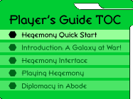

|
Hegemony Quick StartWelcome to Galactic Emperor: Hegemony, Skotos Tech's game of strategic space warfare and diplomacy. This entire Player's Guide is intended to explain how to play the game. However, the basic interface is very simple, and if you don't want to wait you can just read this document and get started at once. The World of HegemonyGalactic Emperor: Hegemony is set in a galaxy which has just discovered faster-than-light travel through the Pinpoint Drives--an ancient technology left behind by the Shining Ones. Prior to this discovery the galaxy was a peaceful place because the long turnaround time for slow boats and ram ships dispersed conflicts over generations. But now, everything is changing. War is erupting across the galaxy. A dozen Overlords are rising up to the stars using their new Pinpoint starships. Eventually one of them will form the first hegemony of a new era. Playing HegemonyGalactic Emperor: Hegemony is a an online strategy game with strong diplomatic elements. Starting to play the game is very simple, although as you progress you will soon learn there are countless strategies. 1. Find the WebsiteTo start off point your computer's web browser to:
This is the portal for Hegemony. It contains the latest news and numerous links of interest. If you're not yet a member of the Skotos community, click "Create Free Trial Account"; otherwise select "Play Now". 2. Sign Up for a GameOn the Play Now page you'll see an option to sign up for a game. Click here. You'll be given an option to select a nickname from up to three names that you've chosen for Hegemony. You'll also be given the option to select between a number of different game types. Don't worry about all this for now. Just scroll down to the bottom of the page and click the "Sign Me Up!" button and you'll be given your default name and the most popular game type. 3. Wait PatientlyGames only start when there are at least 12 people on the wait queue. So, wait patiently, but a game should start fairly soon. 4. Make Your PreparationsOnce your game is ready to start you'll be given a 48-hour warning. The game announcement e-mail will also include a link to the actual game, which will look like this:
Click on that link. Then, go to the Starting Orders box in the lefthand column, and divide your ships up between all the local stars--you'll generally want to send off 10-30 ships per planet. They'll get launched as soon as the game starts. Finally, click on the "Diplomacy" button. Send messages to a few of your nearby opponents and offer to form Non-Aggression Pacts (NAPs). If you don't and multiple opponent attack at once, you're out of the game. 5. Build Your FactoriesMake sure you note when your game starts and sometime not long afterward, log in. You'll want to use most of your initial cash to build factories, either on your homeworld or on nearby planets that are well-protected by geography. These factories will produce ships on a daily basis. Avoid the other costs (speed, battle, probes, shields, space stations, etc.) at this early point in the game. 6. Conquer the GalaxyAnd from there, keep going. Move your ships to take new planets whenever you can. Neutral planets will typically have between 2-20 defending ships, so try not to overcommit yourself. Each new planet will give your more wealth, accrued on a daily basis, so make sure to spend it on more factories. Once your start running into your neighbors, try to talk your allies in helping out at any war you get involved in. If you're not going to be constantly online, make sure to take advantage of "Orders" to keep your ships going when you're not around. |